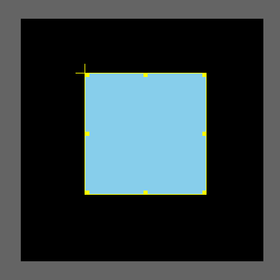
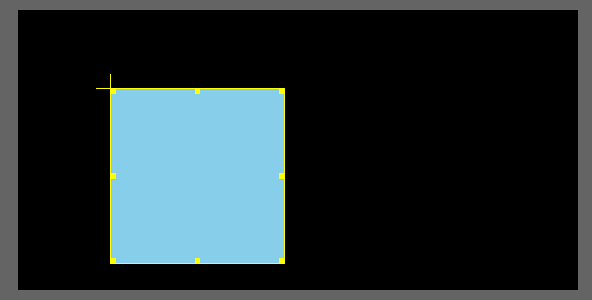
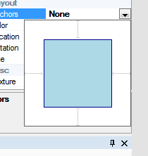
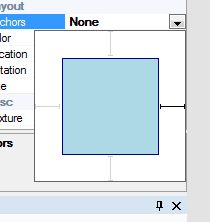
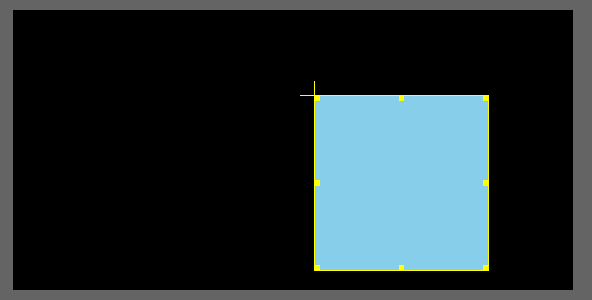
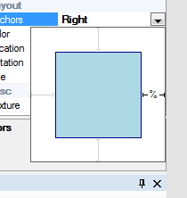
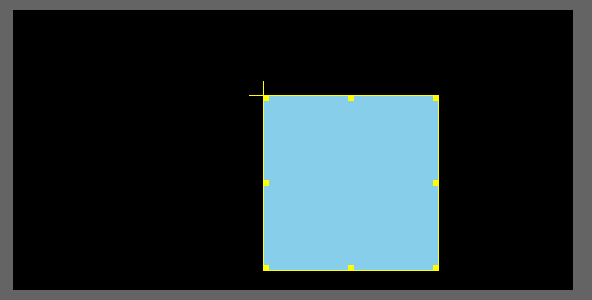

The Anchoring mechanism in OtterUI allows the UI Designer to anticipate and support multiple UI resolutions. For example, an interface may be built entirely for a 1024x768 resolution, but must also render properly on 1280x720. Simply stretching of the interface at rendertime may cause the UI to be warped, causing visual artifacts and other anomalies. Anchors address this issue by appropriately manipulating controls when the resolution changes. An anchored control effectively anchors one (or all) of its bounding box's edges against its parent's bounding box edges. The anchor can either be an absolute or relative anchor:
To demonstrate how these two differ, consider a simple sprite on a 500x500 resolution UI:

If the resolution changes, say to 800x400, the sprite will remain at the exact same location as before:

But in the 500x500 resolution the object was in the middle, whereas it is now off the side. Suppose we want the sprite to always be a fixed width from the right side of the view. To do this, select the control, and in the properties window click on the "Anchors" property. It will bring up the following control:

The blue box represents the control, and the darker blue outline represents its bounding box. The gray lines represent the constraints against the control's parent. To create an Absolute Anchor on the right bounding box edge, click the gray lines next to the control's right edge, to turn it black:

This means there is now an Absolute Anchor on the right edge of the control to the right edge of the control's parent. As the parent control's width changes, OtterUI will ensure that the distance between the control's right edge and the parent's right edge remains constant.
Changing the resolution from 500x500 to 800x400 yields the following result:

Relative Anchors work similarly, except that they are created by clicking twice on the gray line, changing it from gray to black to black with a '%' in the middle:

(note, repeatedly clicking on the anchor will repeatedly cycle the anchor between its three types: none, absolute, and relative, in that order)
The Relative Anchor simply means that the OtterUI will maintain the same ratio of a particular edge to its corresponding parent edge among different resolutions. In the above example, changing the anchor type from Absolute to Relative and then switch resolutions from 500x500 to 800x400 yields the following result:

Notice that the distance between the sprite's right edge and the view's right edge is not the same as before? That is because the ratio of the distance between the sprite's right edge and view's right edge against the new resolution is the same as before. In other words, if in the 500x500 resolution the distance was 50px, the ratio would have been:
50px/500px = 0.1
In the new resolution, we need to maintain the same ratio, so the new distance between the two edges is: 800px * 0.1 = 80
As a result, the right edge is placed 80px away from the right edge of the view.
Notes and Caveats:
Multiple Anchors:
Since the anchoring system works on edges, anchors can be placed on any combination of edges with any combination of anchor types (one type per edge). If an edge is not anchored, OtterUI assumes that the edge can be "moved" and will attempt to adhere to the size and placement of the control. If multiple edges are anchored, OtterUI will resize / reposition the control as necessary to maintain the anchors.
Rotation:
At runtime, anchoring is performed pre-rotation, which means that rotated controls may not behave as expected. This is a known issue.
Working in a resolution:
When a control is modified (ex, moved, rotated, etc) in a particular resolution, OtterUI assumes that that was the designer's intention and that the control must appear exactly like that in the particular resolution. What this means in practical terms is that you must remember to switch back to your working resolution whenever you test your work in other resolutions. If, for example, you switch to a test resolution, move a control up 50px, create a keyframe, and switch back to the working resolution the control may be moved in ways you were not expecting. That is because OtterUI was told that the control must appear in a particular way in the resolution that you made changes within. Switching back to the rest resolution will place the control back where it was expected.
Created with the Personal Edition of HelpNDoc: Easy EPub and documentation editor